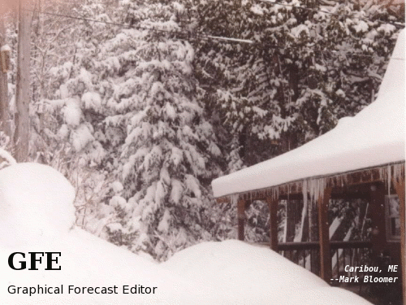

GFESuite Splash Screens
The GFESuite Splash Screens are a result of a nation-wide photo contest
in which weather service forecasters submitted entries and voted for
their favorites. The Winners (2 from each region -- except SR
where there was a tie) appear randomly 65% of the time.
A group of Extra photos also appear 30% of the time weighted by the
votes they received.
There were so many excellent photos, that the developers chose another
set to appear randomly, the remaining 5% of the time.
Below you will find background information about each photo which
further enhances their beauty.
ENJOY!!
*****************
Winners
Entry AR1: Todd Foisy
-- Anchorage
Location: Chugach
Mountains near Girdwood, Alaska, Dec. 06. Girdwood is a quiet ski town
45 minutes southeast of Anchorage. I live in Girdwood and commute to
Anchorage. The Chugach Mountains here, including the ski area, average
around 700" of snow annually.
Entry AR2: Todd Foisy
-- Anchorage
Location: Northern
Prince William Sound and the Chugach Mountains, Feb. 07. This is where
all the cruise boats come in the summer to see glaciers calving.
Entry CR23: Mike Umscheid, NWS
Dodge City
Location: Taken in June 2006
on a storm chase in northeastern Colorado.
This high-based supercell revealed some amazing colors right at sunset, turning the whole
sky and foreground into an amazing
assortment of gold, orange, and violet hues. Near Yuma,
Colorado.
Entry CR7: Eric A.
Helgeson
Rapid City SD
Location: Clear night with full moon over Badlands National Park, SD
Entry ER6: Rob
Radzanowski, WFO-State College
CTP
Location: A great double rainbow over Mount Nittany from near
WFO-State College on Sept 29, 2006.
Entry ER1: Conor Lahiff,WFO
Burlington, VT
Location: Mount
Mansfield in the spring, the highest peak in Vermont
Entry ER5: Rob
Radzanowski, WFO-State College
CTP
Location: Great mamatus clouds over Pittsburgh, PA in June 1998.
Entry PR1: Andy Nash WFO
Burlington -- taken when at WFO Honolulu
Location: Kilauea Lava at Night: Taken April 2003 on
the Big Island. The spots in the picture are rain drops. What you can't
hear is the amazing sizzling sound when the drops hit the hot lava.
Entry PR2: Andy Nash WFO
Burlington -- taken when at WFO Honolulu
Location: Hana Coast of Maui: Taken January 2006.
Entry SR2: Julie States
SJT San Angelo TX
Location: This photo of a LP Supercell was taken by myself from
the National Weather Service office in San Angelo, Texas late
afternoon/early evening on May 01, 2006, where I am a
forecaster. This storm was located over Coleman
county, Texas. In general the severe weather season in West
Central Texas is from the end of April thru the middle of June. This
storm was one of the first in what was a very busy severe weather week
for West Central Texas.
Entry SR6:
Ted Ryan WFO Fort Worth (FWD)
Location: Lightning
from developing storm along an old outflow boundary taken June 6, 2005,
near Haskell, TX.
Entry WR5: Mike
Staudenmaier -- WFO Flagstaff
Location: Cathedral
Rock in Sedona AZ
Entry WR8: Wade Earle
Location: Taken from Cabbage Hill along Interstate 84 just
southeast of Pendleton, Oregon. A generally dry thunderstorm was
making its way across portions of the Columbia Basin.
Entry PR3: Paul Stanko,
WFO Guam
Location: Surf along the south side of Orote Point,
Guam in Nov 2006
while receiving the fetch from Typhoon Dale. Estimated surf
height to be between 60-80 ft as the hill to the right (as judged from
a topo map) was a little over 100ft at that point.
*****************
Extra Photos
Entry CR8: Eric A.
Helgeson
Rapid City SD
Location: Roughlock Falls in Spearfish Canyon, SD after several
inches of rain in the northern Black Hills
Entry CR10: Brett
McDonald RIW Riverton Wyoming
Location: Teton Mountains in background with Bison
Entry CR21: Joseph Nield WFO
IND
Location: Two tornadoes in
Thayer County, Nebraska on May 24, 2004.
Entry CR22: Mike Umscheid, NWS
Dodge City
Location: Taken in September
2006 in Grand Teton National Park, I was out photographing in the
park early in the morning in mid-September and as the fog was beginning
to lift, a brilliant fogbow made a
presence, and I just so happened to have a view of Grand Teton
as a backdrop.
Entry ER3: Tom Mazza
RLX Charleston WV
Location: Lake Side Park
Entry ER8: Anita
Silverman
Blacksburg VA
Location: Mabry Mill on the Blue Ridge Parkway in Virginia, taken
by me in January 2005.
Entry ER10: John
Rozbicki WFO BUF
Location: Fillmore Glen State Park, Moravia, NY
Entry SR3: Walter L.
Snell
Senior Forecaster
WFO San Juan, Puerto Rico
Location: Puerto Rico in the Greater Antilles south of the
Tropic of Cancer. From the Highway 957 bridge over the Canovanas
River upstream from the river gage (not visible). It was taken in June
of 2007 when the Flamboyan trees bloom with their bright orange
petals. This is a low water and fair weather day. When this
river floods the bridge is covered and the park to the left may be
inundated with over a foot of water.
Entry SR5:
Ted Ryan WFO Fort Worth
(FWD)
Location: Sunset over the Coastal Plains taken in Corpus Christi
TX Dec 28, 2000.
Entry SR10: Bert Gordon
SJU Puerto Rico
Location: Flamenco Beach on the small island of Culebra,
PR
Entry SR13: Ed
Tirado SJU Puerto Rico
Location: Mouth of Rio Guayanes in Yabucoa. View from mouth of
river on southeast coast
of mainland Puerto Rico.
Entry WR2: Steve
Anderson
-- Monterey
Location: Rural
road near Monterey, California (January, 2007)
Entry WR3: Suzanne
Anderson
-- Monterey
Location: near
Death Valley, California (October, 2005)
Entry WR10: Roger S.
Cloutier, Senior Forecaster at NWS
WFO Pendleton, OR.
Location: Taken in front of the NWS PDT office as a
thunderstorm cell developed nearby. The photo was taken
at 6:18 PM PST, March 10, 2006. Since it was still winter, this
CB
cloud did not produce that much lightning, however it did produce an
interesting mushroom cloud shape with a rain/snow mix precipitation
shaft under the cloud base. This image shows NWS WFO PDT's
typical atmospheric
instability that develops in the late winter and early spring when low
pressure systems aloft with a cold pool aloft moves into the region,
however, it is unusual for a cloud to be this well defined so early in
the convective season in this climate. The building in the background
is the Army National Guard building just down the street from the WFO
office, and the airport runway is behind it. This cloud did become a
concern for local aviation including commercial aircraft landing or
taking off.
Entry WR12: Shawn Weagle HAS Forecaster NOAA/NWS Northwest River
Forecast Center Portland,
Oregon
Location: Bryce Canyon, Utah during a monsoon thunderstorm in July 2004.
*****************
Developer's Choice
Entry CR4: Sam Beckman
Location: On Highway
28 south of Lander near South Pass, looking back at Red Canyon in
Central Wyoming.
Entry CR5: Brenda Brock,
NWS Des Moines
Location: Radar in the middle ... taken in
January 2007
Entry CR14: Don
Rolfson, Marquette, MI
MQT
Location: Presque Isle Park. Marquette, MI. February 2006.
Entry CR16: Mary-Beth
Schreck WFO Wichita, KS
Location: La Crosse, WI during a valley fog event in September,
2006.
Entry CR17: Mary-Beth
Schreck WFO Wichita, KS
Location: Amish country near Cashton, WI, southeast of La Crosse.
Entry CR19: Kevin E. Smith
Meteorologist - NWS/WFO PAH (Paducah, Kentucky)
Location: Taken on 10/29/05 at
853 am CDT. The picture shows river fog on the Kentucky side of
the Ohio River (facing Paducah, KY) next to the Interstate 24 River
bridge connecting southern Illinois to western KY.

Entry ER7: Mark Bloomer
RLX
Charleston WV
Location: Caribou, ME snow storm
Entry SR1: Corey Pieper
-- El Paso
Location: East Side of the Franklin mountains (which pass into
El Paso proper). This photo was taken on Trans Mountain Road. Photo is
taken pointing east, towards the NE side of town.
Date: Around an inch of snow fell across El Paso, including the
Franklin Mountains along Trans Mountain Road on January 2, 2007
Entry SR7:
Bobby Boyd
Meteorologist
National Weather Service Nashville, TN
OHX
Location: Wolf Creek Dam in Kentucky.
Entry SR12: Althea
Austin-Smith SJU Puerto Rico
Location: Rio Grande de Anasco, Puerto Rico. Tributary
feeding into the Rio Grande de Anasco River
Entry WR7: Duane
Dykema -- Monterey
Location: Along highway 50 in western Utah Title: Smoke From a
Wildfire Colors the Evening Landscape Near the
Utah-Nevada Border
Entry WR14: Eric Kurth
NWS Sacramento CA
Location: Lenticular clouds above the Sierra Nevada
Mountains at Desolation
Wildnerness in California, with a partially frozen Loon Lake in the
foreground, taken on March 31, 2007.
Entry WR17: Don Moore
Billings Montana BYZ
Location:
Billings, MT 16 December 2005 snowflake. Atmospheric conditions
were
perfect for growing beautiful, low density, snowflakes, which grew in
good ascent, instability, and temperatures between -12C and -18C.
This is actually 3 separate pictures merged into one. Taken with
a digital camera and weak microscope.
Entry WR19: Jerome
Saucier, HMT
WFO Great Falls Montana
Location: Taken at 4:05 AM MDT north east of WFO Great Falls
Montana.
Noctilucent Clouds
Observed July 13/14, 2006
Entry WR21:
Carolyn Willis, HMT/CPM Billings, Montana
Location: Near Mystic Lake, Montana
The GSD gang and Flatirons
Location: Boulder, CO